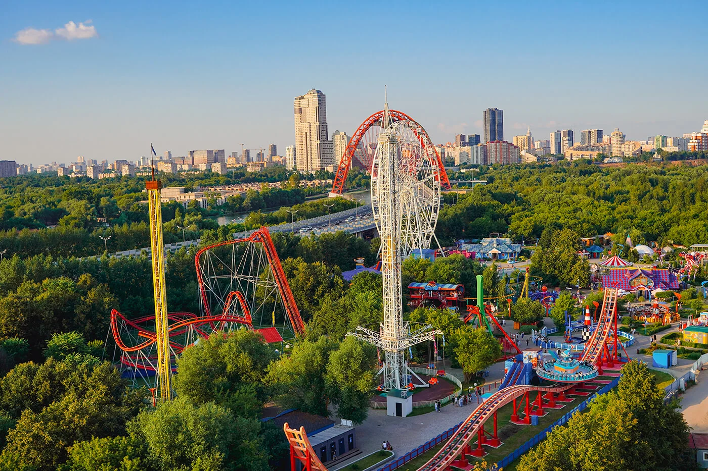
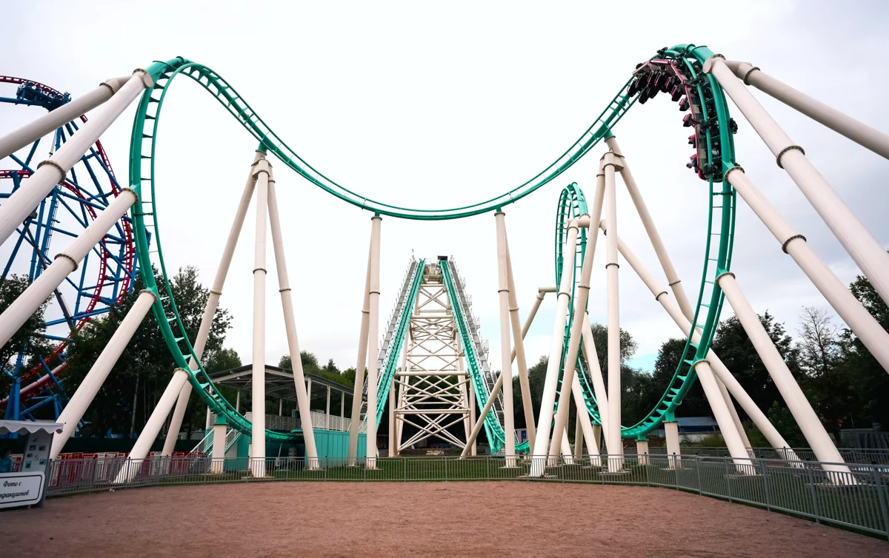

Основное направление A. Тёмная тема использует B; финансовые сцены — принципы C.
A / ОсновноеГородской парк

Дневной свет, настоящая территория, спокойная типографика. Фото передаёт масштаб, текст формулирует тезис.
B / Тёмная темаСиний вечер

Глубокий синий и голубой световой акцент. Фотографии остаются достоверными; цветовая тема не меняет содержание.
C / Финансовые сценыЯсный отчёт
Подписанные шкалы. Один акцент на сравнении. Читаемые периоды и единицы, которые не исчезают на мобильном.
Графическая проба, не финансовые данные. ТИПОГРАФИЧЕСКАЯ ПРОБАОт районного парка
к городскому масштабу.
Manrope 600 · Golos Text 400 / 500. Кириллица, неразрывные единицы, табличные числа.
455,6 млн ₽Выручка · 1П2026 · пример из финансового блока